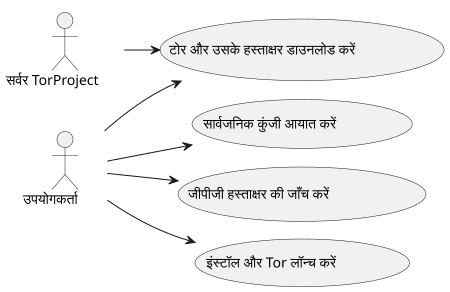
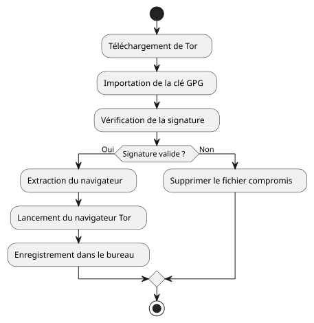

Ubuntu पर Tor ब्राउज़र स्थापित और सत्यापित करें
Publié le 05 October 2025
परिचय
एक ऐसी दुनिया में जहाँ डिजिटल गोपनीयता दिन-ब-दिन खतरे में पड़ रही है, Tor Browser एक आवश्यक उपकरण बना रहता है जो अपने अनामिकता और जानकारी की स्वतंत्रता को संरक्षित रखने में मदद करता है। हालाँकि, यह महत्वपूर्ण है कि कभी भी डाउनलोड किया गया सॉफ़्टवेयर न चलाएँ बिनाउसकी प्रामाणिकता सत्यापित की गई. यह लेख एक पूरी विधि प्रस्तुत करता है :
-
डाउनलोड Tor Browser और उसका हस्ताक्षर`.asc`
-
डाउनलोड की गई फ़ाइल की वैधता की जाँच करें
-
Ubuntu पर Tor Browser इंस्टॉल करें और लॉन्च करें
-
इसे डेस्कटॉप मेनús में दैनिक उपयोग के लिए जोड़ें
-
टोर के माध्यम से शैक्षिक संसाधनों और नैतिक OSINT का अन्वेषण करें
टॉर और इसके हस्ताक्षर का डाउनलोड
टोर ब्राउज़र के लिए एक समर्पित फ़ोल्डर बनाएँ :
mkdir -p ~/workspace/tipiak/tor
cd ~/workspace/tipiak/torफिर टॉर ब्राउज़र का आर्काइव और उसकी हस्ताक्षर डाउनलोड करें:
wget https://www.torproject.org/dist/torbrowser/14.5.7/tor-browser-linux-x86_64-14.5.7.tar.xz
wget https://www.torproject.org/dist/torbrowser/14.5.7/tor-browser-linux-x86_64-14.5.7.tar.xz.ascहस्ताक्षर का क्रिप्टोग्राफिक सत्यापन
यह चरण हैआवश्यकयह सुनिश्चित करने के लिए कि डाउनलोड किया गया फ़ाइल वास्तव में Tor Project से आता है और इसे संशोधित नहीं किया गया है।
1. टोर प्रोजेक्ट की सार्वजनिक कुंजी आयात करें
gpg --auto-key-locate nodefault,wkd --locate-keys torbrowser@torproject.orgसुनिश्चित करें कि कुंजी सही तरह से आयात की गई है :
gpg --list-keys torbrowser@torproject.org2. हस्ताक्षर की जाँच करें
gpg --verify tor-browser-linux-x86_64-14.5.7.tar.xz.asc tor-browser-linux-x86_64-14.5.7.tar.xzयदि सब कुछ सही है, तो निम्नलिखित संदेश प्रदर्शित होगा :
gpg: Good signature from "Tor Browser Developers (signing key)"अप्रमाणित कुंजी चेतावनी के मामले में, इसका मतलब सिर्फ यह है कि आपने अभी तक टोर प्रोजेक्ट की विश्वसनीय कुंजी पर हस्ताक्षर नहीं किए हैं, लेकिन हस्ताक्षर अभी भी वैध है।
व्यावहारिक मामला: वैध हस्ताक्षर लेकिन प्रमाणित नहीं की गई कुंजी
पुष्टि के दौरान इस तरह का संदेश देखना सामान्य है :
gpg --verify tor-browser-linux-x86_64-14.5.7.tar.xz.asc tor-browser-linux-x86_64-14.5.7.tar.xz
gpg: Signature faite le mar. 16 sept. 2025 14:26:26 CEST
gpg: avec la clef RSA CAAE408AEBE2288E96FC5D5E157432CF78A65729
gpg: Bonne signature de « Tor Browser Developers (signing key) <torbrowser@torproject.org> » [inconnu]
gpg: Attention : cette clef n'est pas certifiée avec une signature de confiance.
gpg: Rien n'indique que la signature appartient à son propriétaire.
Empreinte de clef principale : EF6E 286D DA85 EA2A 4BA7 DE68 4E2C 6E87 9329 8290
Empreinte de la sous-clef : CAAE 408A EBE2 288E 96FC 5D5E 1574 32CF 78A6 5729यह संदेश इंगित करता है कि हस्ताक्षर तकनीकी रूप से "सही" है (फ़ाइल को बदल नहीं गया है), लेकिन आपका GPG सिस्टम स्वयं कुंजी पर विश्वास को प्रमाणित नहीं कर सकता। इस संदेह को दूर करने के लिए, प्राथमिक कुंजी के फिंगरप्रिंट की तुलना करना आवश्यक है (EF6E 286D DA85 EA2A 4BA7 DE68 4E2C 6E87 9329 8290) उस आधिकारिक टोर प्रोजेक्ट साइट पर प्रकाशित के साथ
आधिकारिक साइट के अनुसार, अपेक्षित पदचिह्न है :`EF6E286DDA85EA2A4BA7DE684E2C6E8793298290`.
क्योंकि प्रदर्शित छाप द्वारा`gpg`यह आधिकारिक साइट की उस जैसी पूरी तरह मेल खाता है, आप सुनिश्चित हो सकते हैं कि कुंजी वैध है और फ़ाइल सुरक्षित है। "अस증माणित कुंजी" की चेतावनी तब आपकी स्थानीय GPG कॉन्फ़िगरेशन के बारे में जानकारी होती है, और हस्ताक्षर की वैधता या फ़ाइल की प्रामाणिकता के बारे में नहीं।
साइन क्यों सत्यापित करें ?
GPG हस्ताक्षरों की जांच डिजिटल सुरक्षा का एक मूलभूत कार्य है। यह करने की अनुमति देती है:
-
गारंटी देनाप्रामाणिकताडाउनलोड किया गया सॉफ़्टवेयर का
-
एक दुर्भावनापूर्ण अभिनेता द्वारा समझौता किए गए फ़ाइल की स्थापना को रोकें
-
भाग लेनाडिजिटल संप्रभुताव्यक्तिगत
-
एक जिम्मेदार और नैतिक डिजिटल संस्कृति को बढ़ावा दें

टॉर ब्राउज़र की एक्सट्रैक्शन और लॉन्च
डाउनलोड की गई आर्काइव को निकालें:
tar -xvf tor-browser-linux-x86_64-14.5.7.tar.xz
cd tor-browserफिर ब्राउज़र लॉन्च करें :
./start-tor-browser.desktopपहले लॉन्च के दौरान, एक कॉन्फ़िगरेशन विंडो खुल जाएगी ताकि टोर नेटवर्क से कनेक्शन स्थापित किया जा सके।
उबुन्टू डेस्कटॉप एकीकरण
एप्लिकेशन मेन्यू में Tor Browser जोड़ने के लिए :
./start-tor-browser.desktop --register-appआप फिर से कर सकते हैं:
-
एप्लिकेशन मेनू से Tor Browser लॉन्च करें
-
इसे डॉक के पसंदीदा में जोड़ें
-
यदि आप चाहें तो कीबोर्ड शॉर्टकट बनाएँ

Tor के साथ शैक्षिक संसाधनों का अन्वेषण करें
Tor केवल एक अनामिकता उपकरण नहीं है। यह शैक्षिक और अनुसंधान संसाधनों तक पहुँच का एक प्रवेश द्वार है, विशेष रूप से निम्नलिखित क्षेत्रों में :
-
ओसिंट (सार्वजनिक स्रोत खुफिया)
-
शैक्षिक साझाकरण और ओपन सोर्स
-
https://archive.org(Tor के माध्यम से पहुँच के लिए अधिक गोपनीयता)
-
https://github.com/(Tor के माध्यम से सुलभ)
-
https://librarygenesis.pro(मुक्त वैज्ञानिक साहित्य तक पहुँच)
-
ज्ञान का संप्रेषण और मानव की समझ डिजिटल समाज में
-
डिजिटल संस्कृति, अभिव्यक्ति की स्वतंत्रता और ज्ञान तक पहुँच के संसाधन
-
तकनीकों की साइबर सुरक्षा और नैतिकता पर मुक्त दस्तावेज़
Tor Browser का अपडेट
अधतम सुरक्षा सुनिश्चित करने के लिए, Tor Browser को अद्यतित रखना अत्यंत महत्वपूर्ण है। ब्राउज़र में एक स्वचालित अपडेट तंत्र बनाया गया है जिसे कमांड लाइन से ट्रिगर किया जा सकता है।
Tor Browser स्थापना निर्देशिका से, बस स्टार्टअप स्क्रिप्ट को पुनः आरंभ करें :
cd ~/workspace/tipiak/tor/tor-browser
./start-tor-browser.desktopलॉन्च पर, Tor Browser स्वचालित रूप से जांचेगा कि क्या एक नया संस्करण उपलब्ध है। यदि ऐसा है, तो यह इसे डाउनलोड और स्थापित करेगा आपके लिए।
यह साधारण विधि सुनिश्चित करती है कि आपके पास हमेशा नवीनतम सुरक्षा पैच और सबसे हालिया सुधार हों, जो सुरक्षित ब्राउज़िंग के लिए आवश्यक है।
निष्कर्ष
अपने डाउनलोड की जाँच करना एक आवश्यक आदत है, जो सुरक्षित डिजिटल वातावरण में प्रगति करने वाले हर व्यक्ति के लिए महत्वपूर्ण है। टॉर को सत्यापित तरीके से स्थापित करना, यहअपनी डिजिटल अखंडता की रक्षा करें, मुक्त सॉफ़्टवेयर में विश्वास बनाए रखें, et अपनी सूचना स्वायत्तता को मज़बूत करना.
डिजिटल सुरक्षा एक जागरूकता का कार्य है, न कि पागलपन का।
संदर्भ
-
टोर प्रोजेक्ट की आधिकारिक साइट :https://www.torproject.org/download/[https://www.torproject.org/download/]
-
हस्ताक्षर सत्यापन दस्तावेज़ :https://support.torproject.org/tbb/how-to-verify-signature/[https://support.torproject.org/tbb/how-to-verify-signature/]
-
Ubuntu दस्तावेज़ :https://ubuntu.com[https://ubuntu.com]
-
शैक्षिक संग्रह :https://archive.org/details/opensource[https://archive.org/details/opensource]
|
यह लेख सुरक्षा और डिजिटल जागरूकता श्रृंखला का हिस्सा है। जिम्मेदार और शैक्षिक प्रथाओं को बढ़ावा देने हेतु स्वतंत्र टूल्स के चारों ओर. |